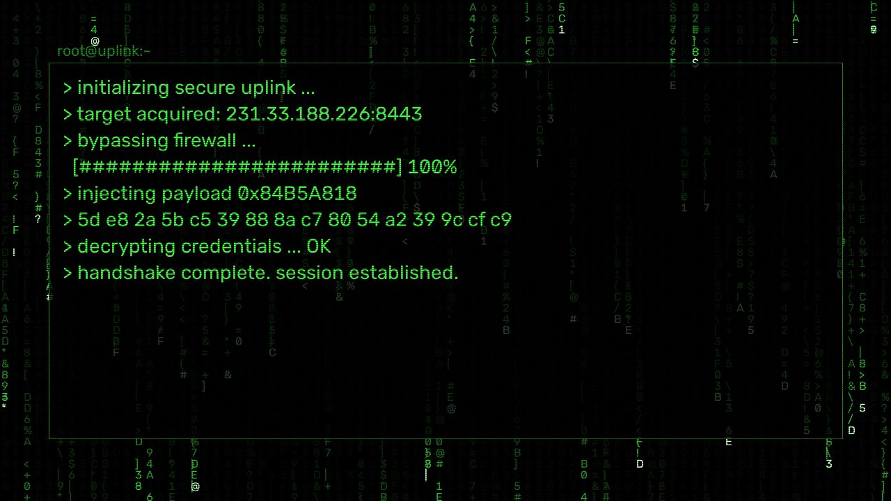
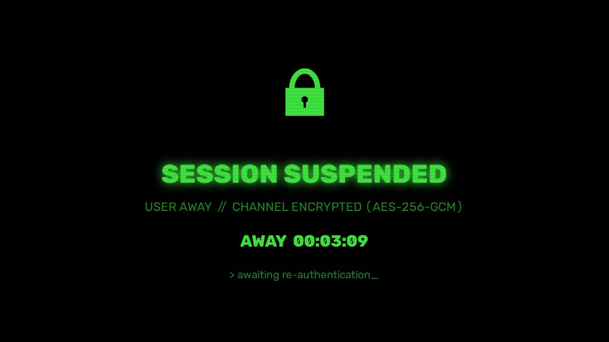

Openings go to waste
The first moments of a talk, demo or kickoff are when attention is highest. On most calls they're spent on audio checks and "let me share my screen".
For people who present, teach, sell and lead on camera
Same webcam. Same blurred bookshelf. Same "can you hear me?". Your expertise is invisible until you've talked long enough to earn attention. Hacker Cam makes your camera do the introduction, so the room remembers you before you say a word.
Free and open source (MIT) · macOS, Windows & Linux · Works with Zoom, Teams, Meet and any app with a camera picker
The problem
In a room, people notice how you walk in. On a call there is no walk-in, just a grid. The person who has spent ten years in security looks exactly like the person who joined yesterday. Everyone gets the same rectangle, the same lighting and the same opening line.
If what you know is your edge, a call that makes you look like everyone else is a tax on that edge.
What it quietly costs you
The first moments of a talk, demo or kickoff are when attention is highest. On most calls they're spent on audio checks and "let me share my screen".
Your background, your craft and your personality don't show up in a webcam tile. You have to talk your way into being taken seriously, every single call.
A week of identical calls leaves no memory of who said the sharp thing. If people can't picture you, they can't remember you, recommend you or invite you back.
The fix
Hacker Cam sits between your webcam and your call app. It adds cinematic effects in real time and hands the result to the call as an ordinary camera. You stay you, now with an entrance.

Everything in the box
Matrix rain, a typed breach log, ACCESS GRANTED, then your name and title before it cuts to your live camera. About ten seconds that set the tone for the whole call.
Start on a black INCOMING SIGNAL screen. On cue, you assemble out of falling particles, head first, and your room fades in behind you.
Brackets lock onto your actual face, a laser sweep draws a live face mesh, and a panel confirms BIOMETRIC MATCH with your name. It tracks you as you move.

Need a minute? Your video scrambles into hex and becomes SESSION SUSPENDED with a running timer. Press again to decrypt back in. Your camera is hidden while it's on.
A dot-matrix world map behind you, where a live trace hops city to city with IPs and latency, locks on a target, then starts a new route.
Everything behind you becomes falling code, with a neon edge glow around you. You stay in full colour, sharp and in front.
You become a translucent, flickering cyan projection with rolling scanlines and a projector glow. It works over your room or either background.
Green-phosphor monitor look: scanlines, static, a rolling tracking band, glitch bursts and a REC overlay. Instant 1995 hacker energy.
Screenshots of the intro, away screen and backgrounds are real frames rendered by Hacker Cam. Effects that need a person are illustrated.
Where it lands
Open a remote talk with the intro instead of "can everyone see my slides?" and you have the room from second one.
Kick off a CTF, a red-team debrief or an awareness session with the right atmosphere. The global trace is made for it.
Give a product demo an entrance. The biometric scan with your name and title is an introduction nobody forgets.
Turn standups, all-hands and Friday demos into something people look forward to. The away screen alone earns a laugh.
Any app that reads a camera works, so your stream overlay is a keystroke away, with no scene editing.
Students remember the class that started with ACCESS GRANTED. Use the moments to mark the start of each section.
How it works
Download the installer for macOS, Windows or Linux. It includes everything, and you don't need Python or any technical setup.
Install the free OBS Studio and click Start Virtual Camera once (on Linux, load v4l2loopback). You don't need OBS open after that.
Choose OBS Virtual Camera in Zoom, Teams or Meet. Then trigger effects from the >_ menu bar icon or with hotkeys.
Background removal and face tracking run on-device. Your video goes from your webcam to Hacker Cam to your call app, and nowhere else. There are no accounts. The app can share anonymous usage stats (which effects get used, app version, OS), but only if you say yes, and never video, images or anything you type. The code is open source, so you don't have to take our word for it.
Free, open source, everything included
Requires the free OBS Studio 30+ (macOS/Windows) or v4l2loopback (Linux) for the virtual camera.
Any app that lets you choose a camera: Zoom, Microsoft Teams, Google Meet (in Chrome, Edge or Firefox), Webex, Slack huddles, Discord, FaceTime and more. Hacker Cam shows up as OBS Virtual Camera. Apps that don't let you pick a camera can't use it.
Operating systems don't let apps create a camera on their own. OBS Studio (free and open source) installs a trusted virtual-camera driver. You click Start Virtual Camera once to set it up, and after that you never need to open OBS again.
It's built to render 30 frames per second on a typical laptop. Plain webcam pass-through is very light. Background removal and face tracking use more CPU while they're on.
No. Everything runs on your machine, and there are no accounts. If you agree to share anonymous usage stats, the app sends event names such as "effect used: hologram", plus the app version and your OS. It never sends video, images, your name or anything you type, and you can switch it off in Options.
Yes. Hacker Cam is open source under the MIT license: use it, change it and share it, including at work. If you build something on top of it, a link back is appreciated.
Yes. Global hotkeys (⌃⌥H and friends) work while your call app is in front. On macOS, allow Input Monitoring once when asked.
Yes. For example, hologram over the world-trace map, the hacker filter over the matrix background, or a biometric scan on top of either.
Your call app's self-view shows exactly what others see. Hacker Cam's window also has a live preview, if you want to rehearse before a call.